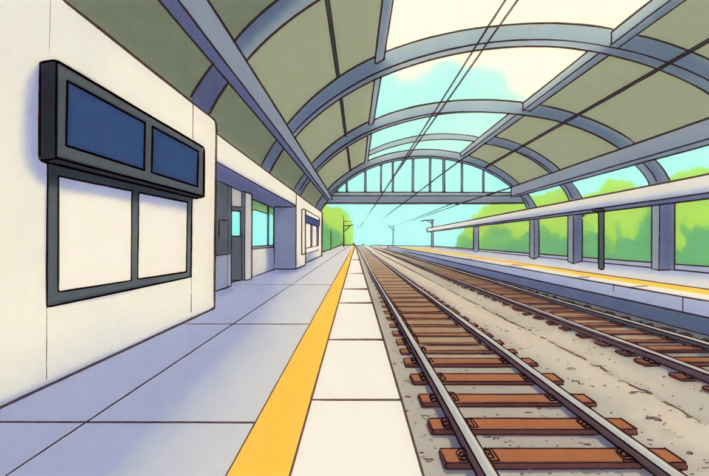

Alemão A1 · Aula 17 de 30 · GrátisTransporte público
Nesta aula você vai aprender a comprar bilhetes e usar trem, ônibus e metrô.
 Lektion 17
Lektion 1701 · Primeiro, escuteDiálogo em contexto
Ouça a conversa completa e acompanhe a tradução em português.

Anna e LukasEine Fahrkarte nach Berlin, bitte.Uma passagem para Berlim, por favor.
02 · Frases essenciaisEscute e repita
Aprenda cada expressão como um bloco completo.
01Eine Fahrkarte nach Berlin, bitte.
Uma passagem para Berlim, por favor.
02Einfach oder hin und zurück?
Somente ida ou ida e volta?
03Hin und zurück, bitte.
Ida e volta, por favor.
04Der Zug fährt um zehn Uhr ab.
O trem parte às dez.
05Von welchem Gleis?
De qual plataforma?
06Von Gleis vier.
Da plataforma quatro.
07Eine Fahrkarte nach Berlin, bitte
Eine Fahrkarte nach Berlin, bitte pede uma passagem. Fahrkarte vem de fahren, viajar, mais Karte, bilhete.
08nach: nach Berlin, nach Deutschland.
Eine Fahrkarte nach Berlin, bitte pede uma passagem. Fahrkarte vem de fahren, viajar, mais Karte, bilhete.
03 · Entenda a lógicaExplicação em português
O alemão fica visível; a explicação ajuda você a entender como usar.
Explicação 1Dein Beispiel
Agora tente comprar bilhetes e usar trem, ônibus e metrô, trocando uma informação por algo verdadeiro sobre você.
Explicação 2Eine Fahrkarte nach Berlin, bitte.
Vamos destrinchar as frases-chave da conversa.
Explicação 3Karte
bilhete. Para cidades e países sem artigo, o destino leva
Explicação 4Sprechen Sie nach
Hora de praticar. Repita cada frase no ritmo que conseguir.
04 · FixaçãoTeste o que aprendeu
Escolha a tradução correta e confira na hora.